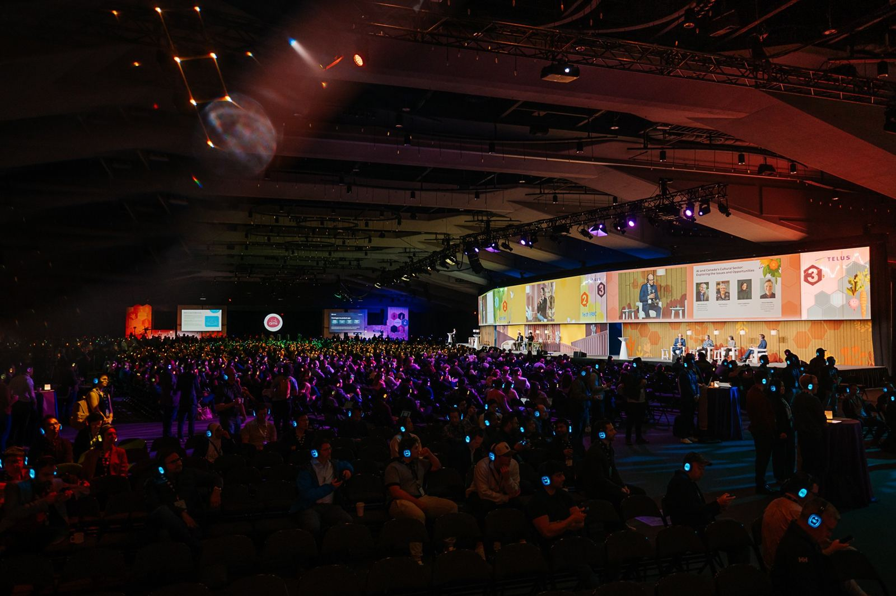

Conferences · AI
Upper Bound 2027
- Dates
- –
- Location
- Edmonton, Canada
- Format
- In-person
- Category
- AI
- Industry
- Artificial intelligence
- Organiser
- Amii (Alberta Machine Intelligence Institute)
- Expected attendance
- 11,000
- Official website
- https://www.upperbound.ai/
About
The official page names Edmonton but not the venue. Canadian dates are local to the host city.
Topics: AI, machine learning, AI adoption, research.
Official Upper Bound homepage: 'Along with 11,000+ other participants' (standing figure).
Sources
- Official — https://www.upperbound.ai/